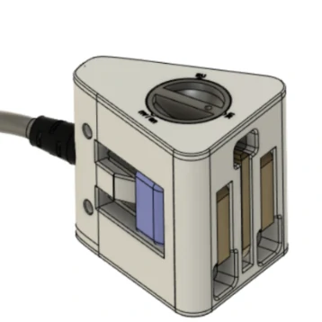

The brief — too many cords, too many adapters, too much clutter. The challenge was to build something the market hadn't tried: one power cord with an integrated rotary switching mechanism, built from the start.

One power cord. Every major international socket. No loose dongles, no exposed contacts — the adapter is built into the cord itself, and the connection only goes live when you choose.
Took the project from competitive teardown through mechanism design, prototyping, and fabrication — every part 3D printed, every contact hand-placed in brass.
A working prototype engaging every supported wall plug geometry, energising only on deliberate rotation — proving the mechanism concept end-to-end.
The brief had a built-in contradiction. Fit the three major international wall plug standards into a single adapter — and make it smaller than everything already on the market.
Existing adapters solve the multi-plug problem the obvious way: stack the geometries side by side, add sliders to select between them, and accept the bulk. The result is always a cube. The UK plug sets the floor — it's the largest footprint of any standard, and everything has to fit around it.
The more plug geometries you need to support, the bigger the housing gets. Shrinking it wasn't a refinement problem — it required rethinking the geometry from scratch.
Disassembling several travel adapters revealed how the better-engineered products handled the multi-function challenge of plug heads: pivot, lock, and conduct — each action triggered at the right moment through elegantly simple parts.
Some adapters used large brass plates as both guides and conductors. The Europe plug head was even more instructive — each leg held by a single screw that doubled as the contact point when the plug rotated into position. Plastic pivots handled the mechanical side. Two separate systems, each optimised for mass production.
The UCA worked from the same principle but collapsed it further. The original plug legs were extracted from the teardown sample and re-housed in a 3D printed body — the brass rods now handling pivot, location, and electrical continuity as a single element. A prototype-scale interpretation of the same logic, with one fewer system.
Travel adapter before disassembly — all plug geometries deployed simultaneously
Interior of a disassembled travel adapter — brass plates, slider mechanism and plug pivots visible.
Europe plug head disassembled
UCA first prototype plug head
Every adapter on the market treats the housing and the selection mechanism as separate problems — a box to contain the plug geometries, and something else added on to select between them. The mechanism always adds bulk because it was never part of the geometry to begin with.
Designing the plug modules independently and arranging them as compactly as possible naturally produces a triangle. Three faces, three standards. The cylindrical space at the centre — unavoidable, inherent to the arrangement — becomes the functional stack: cable gland, electrical connector, rotating switch, and knob, all sharing the same axis. Turn the knob, feel it lock into position, the circuit closes. Every cubic millimetre occupied. No space to spare.
This was a technical demonstrator — built to prove that a custom rotary switch could be constructed cheaply from scratch before committing to a full design direction.
The switching action is based on a rotary flexural detent mechanism — a configuration developed specifically for this prototype. A slotted disk rotates in the horizontal plane. Three spring-steel strips are arranged radially above it, each pre-bent so its tip presses lightly against the disk surface under its own elastic tension. The disk carries a single slot. As it rotates, only one strip at a time aligns with the slot — the tip drops through, flexing downward onto a central conducting ring below.
In conventional rotary switches, the detent mechanism and the electrical contact are separate components: a ball-and-notch or spring-steel detent indexes the position, while a separate rotor arm or bridging contact closes the circuit. Here they are unified. The same flexural strip that locks the disk into position simultaneously closes the electrical path — one element, two functions.
The circuit is a single-pole, triple-throw (SP3T) configuration. The live conductor connects permanently to the central ring. Each strip, when seated, completes the neutral path to its corresponding socket. The two unseated strips remain open, their tips resting on the unslotted disk surface, holding those circuits open by geometry alone.
The entire assembly was 3D printed and hand-fabricated. No PCB, no off-the-shelf encoder. Geometry doing the work of a component.
Rotary knob prototype — assembly overview
Rotary knob prototype in action
Rotary knob prototype — detent indexing and contact engagement.
Each iteration proved one thing in isolation before the next combined them. The rotary mechanism demonstrator validated the switching concept independently. The two prototype stages that followed built the complete assembly around it — first the plug geometry, then the integrated hub.
With the switching concept proven, the focus shifted to the plug assembly itself. This iteration built the full multi-position plug body — three international wall plug geometries (UK BS 1363, EU CEE 7, US NEMA 1-15) in a single printed housing — using an off-the-shelf switch as a temporary stand-in for the rotary mechanism. The goal was to validate each plug geometry and contact continuity independently of the switching solution. The UK plug module was developed in parallel — brass legs extracted from teardown samples, modified to rotate while maintaining electrical contact, and re-housed in a printed body. Each leg required individual shimming to align the contact faces and allow soldering without compromising the pivot.
UK plug module — inner face showing brass contact rods, selector slider, and wiring connections.
Modified BS 1363 brass leg — extracted from teardown sample, re-housed in printed body with pivot and contact faces retained.
Iteration 2 plug body — three wall plug geometries on separate faces, off-the-shelf switch visible on right face.
DC transformer load unit — open case showing transformer and fan driven by the cord, used to confirm electrical continuity under load.
BS 1363 geometry validation — prototype engaged with UK wall socket, confirming plug fit and electrical continuity across the switching positions.
The final iteration integrated the rotary switching mechanism directly into the assembly. The hub sits inside the triangle's inscribed circle, occupying space the geometry made available rather than adding bulk. Brass raised profiles on the hub surface act as cam surfaces; three metal strips bear against them as followers, indexing each wall plug position as the knob rotates. The hub connects to the wiring harness via an RCA-style connector — no soldering required for assembly or disassembly. The knob detaches independently. The complete cord terminates in a C13 connector at the appliance end — a standard kettle lead connection compatible with computers, monitors, printers, and laboratory equipment globally. Moving the indexing mechanism inside the hub resolved the width problem the flexural detent demonstrator had exposed. The external footprint stays true to the triangle geometry — nothing added, nothing wasted.
The brief asked for something smaller than everything on the market, covering every major international wall socket in a single cord. The prototype delivered both — a triangular housing roughly 35% smaller by volume than comparable adapters, with three wall plug geometries selectable by a single rotary action.
But the more significant outcome was methodological. Every core decision came from looking sideways — a marine isolator suggested the switching principle, triangle geometry solved the space problem, a teardown of cheap Chinese adapters taught the value of parts doing double duty. None of it came from iterating on what adapters already looked like.
The entire prototype was hand-fabricated without custom tooling. Brass contacts were cut, bent, shimmed, and soldered by hand. Housings went through five printed iterations. The mechanism was designed from first principles and proved to be genuinely novel — a rotary flexural detent configuration not previously documented in this application.
That combination — lateral thinking, geometric reasoning, and the ability to fabricate and validate in brass and PLA — is what the UCA demonstrates.
Looking to work on systems that move, sense, and respond.